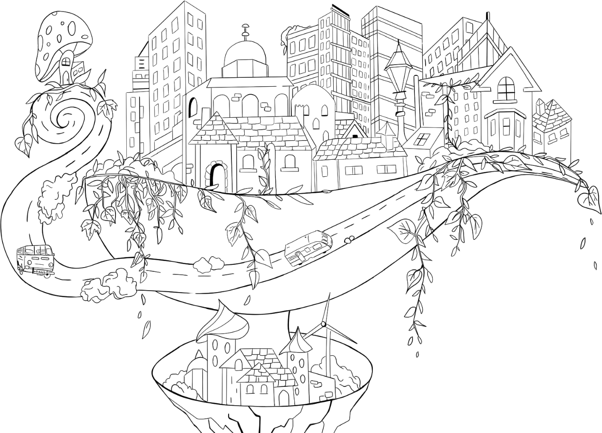

Empathy first
I design with real people in mind, starting from needs, context and friction points.
Hi, I'm Terrs, a human being with too many ideas and not enough time and space to make them real.
This page is not about UX, it's about another side of me: part creativity, part curiosity, part quiet chaos.
A place to show my collection of hobbies, my obsession with colors and my love for handmade crafts. ♥



I’m Mariateresa, a Brand and UX/UI Designer with a background in high-pressure production environments. That experience shaped the way I design today: organized, detail-oriented and focused on making things work beautifully.
What Guides My Work
Thoughtful by design.Empathy first
I design with real people in mind, starting from needs, context and friction points.
Curious & intentional
I ask the right questions to turn ideas into clear, purposeful experiences.

Craft & clarity
I care about details, consistency and visual systems that make interfaces feel easier.
Let’s Create
Something